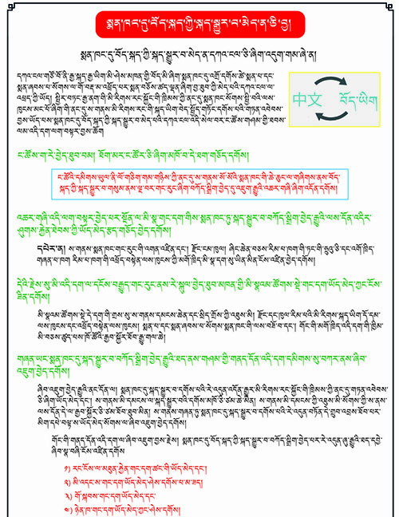

<div class="home grid" id="home">
  <div class="grid-box" id="box1">
      <h4>ལས་འགུལ་སྤེལ་ཆོག་སྐོར་པར་རིས་བརྒྱུད་ངོ་སྤྲོད་མདོར་སྡུད།</h4> 
    <a  href="box1">
       
    </a>
  </div>

  <div class="grid-box" id="box2">
      <h4>ལས་འགུལ་འཆར་འགོད་ཀྱི་གོ་རིམ་འགྲེལ་བརྗོད་།</h4>
      <a id="box2-link" href="box2">
    
    </a>
  </div>
  <div class="grid-box" id="box3">
      <h4>ལས་འགུལ་སྤེལ་ཆོག་རྒྱས་པ།</h4>
      <a id="box3-link" href="box3">
        
      </a>
  </div>
</div>

<div class="grid-full">
  <a href="model-full">
   <h4 class="button-long"></h4>
  </a>
</div>
<!--
<div class="home" id="home">
  <h1 class="pageTitle">Blogs</h1>
  <ul class="posts noList">
    {% for post in paginator.posts %}
      <li>
        <span class="date">{{ post.date | date: '%B %d, %Y' }}</span>
        <h3><a class="post-link" href="{{ post.url | prepend: site.baseurl }}">{{ post.title }}</a></h3>
        <p>{% if post.description %}{{ post.description }}{% else %}{{ post.excerpt | strip_html }}{% endif %}</p>
      </li>
    {% endfor %}
  </ul>
-->
  <!-- Pagination links -->
  <!--
  <div class="pagination">
    {% if paginator.previous_page %}
      <a href="{{ paginator.previous_page_path | prepend: site.baseurl }}" class="previous button__outline">Newer Posts</a> 
    {% endif %}
    {% if paginator.next_page %}
      <a href="{{ paginator.next_page_path | prepend: site.baseurl }}" class="next button__outline">Older Posts</a>
    {% endif %}
  </div>
</div>
-->